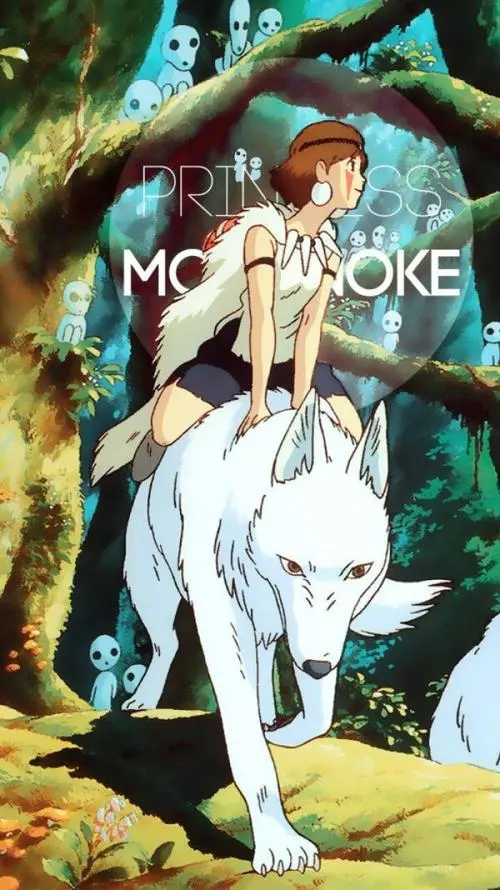

宫崎骏
我们别无选择，只能从这个流感盛行的世界出发。

幽灵公主

《幽灵公主》是宫崎骏执导的一部日本动画电影，于1997年上映。故事背景设定在日本的中世纪时期。主人公阿斯达卡是一位年轻的王子，他在一次与野猪神兽的激战中被一只巨大的狼救下。然而，在救援过程中，阿斯达卡失去了他的右臂，而狼则因为被捕夹夹住而受了伤。
阿斯达卡帮助狼摆脱了困境，并给它取名为摩罗。在与摩罗一起生活的日子里，阿斯达卡逐渐与这只狼建立了深厚的友谊。然而，他的好奇心驱使他开始寻找制造捕夹器的人类，并探索着他们的村庄。
在他的探索中，阿斯达卡遇到了一个神秘的女孩，她被称为“幽灵公主”。幽灵公主被狼养大，与狼有着密切的联系，并且拥有着神奇的力量。她的右眼被一块充满负面能量的水晶所覆盖，使她能够与动植物进行心灵交流。
阿斯达卡与幽灵公主之间建立了一种特殊的关系。他们共同面对着森林的破坏以及为资源而展开的冲突。人类的开发活动导致了动植物失去了栖息地，引发了与狼和其他生物的激烈冲突。阿斯达卡努力寻求和平解决冲突的方法，而幽灵公主则试图保护森林和动物们的权益。
电影展现了自然与人类之间的紧张关系。它揭示了人类贪婪和短视行为对环境造成的破坏，并探讨了环境保护与发展之间的冲突。它呼吁观众们反思自己对自然的态度，并思考如何更好地保护和平衡人类与自然之间的关系。
《幽灵公主》不仅以其深刻的主题而闻名，还因其精美的动画画面而备受赞誉。电影展现了宫崎骏独特的艺术风格，将自然界的细节和奇幻元素相融合。从森林的细腻描绘到生物的栩栩如生，每一帧都呈现出令人惊叹的视觉效果。
除了美丽的动画之外，电影的配乐也非常出色。久石让为电影创作了动人心弦的音乐，进一步增强了情节的感染力和观众的情绪共鸣。
总的来说，《幽灵公主》是一部融合了环境主题、奇幻元素和动人情感的杰作。它向观众呈现了一个令人深思的故事，提醒人们保护自然、和谐共存的重要性。无论是美丽的动画、深刻的主题还是精心构造的人物关系，都使《幽灵公主》成为一部令人难忘且深具影响力的电影作品。
电影在全球范围内获得了广泛的赞誉，不仅在日本本土取得了巨大的成功，还在国际上赢得了多个奖项。它被誉为宫崎骏的代表作之一，被赞赏为一部具有深度和艺术性的动画电影。
通过《幽灵公主》，观众们被引导思考人类与自然之间的关系，以及如何在发展与保护之间寻求平衡。电影以其精湛的艺术表现、动人的故事和深刻的主题，向观众传递了一种珍视自然和生命的重要讯息。